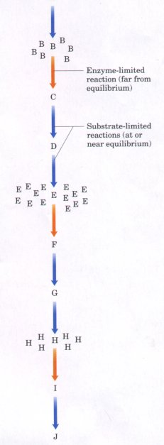
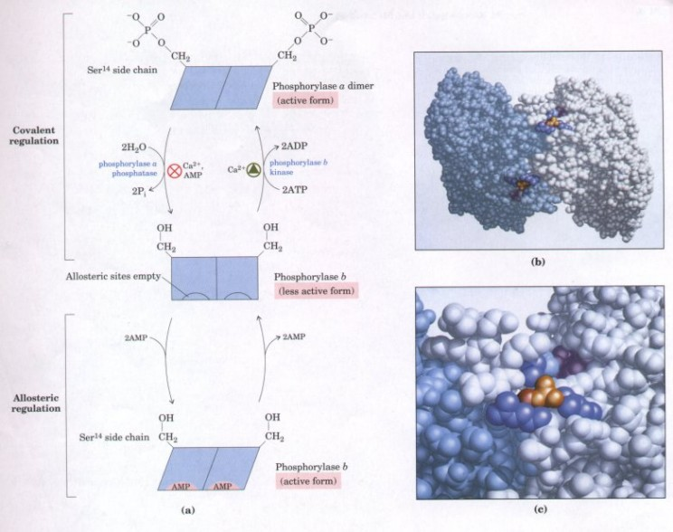
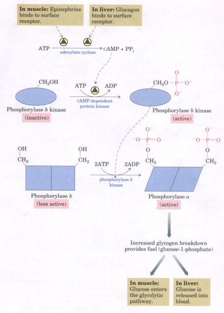

Carbohydrate catabolism provides ATP as well as precursors for a variety of biosynthetic processess. It is crucial to a cell to maintain a sufficient concentration of ATP, at a nearly constant level, regardless of which fuel is used to produce ATP and regardless of the rate at which ATP is consumed. An organism that undergoes a change in circumstances, such as increased muscular activity, decreased availability of oxygen, or decreased dietary intake of carbohydrate, must alter its catabolic patterns to change the flow of carbohydrate fuel, whether from stored reserves or from extracellular sources, through glycolysis. These changes in catabolic patterns are accomplished by the regulation of key enzymes in the catabolic pathways. In glycolysis in muscle and liver tissue, four enzymes play a regulatory role: glycogen phosphorylase, hexokinase, phosphofructokinase-l, and pyruvate kinase. Our discussion of the regulation of glycolysis necessarily involves some details of the reciprocally regulated process of glucose synthesis (gluconeogenesis), which is more fully discussed in Chapter 19.
Before describing the regulation of glucose catabolism, we will consider some general principles that apply to the regulation of all biochemical pathways.
Although not at equilibrium with their surroundings, adult organisms generally exist in a steady state. A constant influx of fuel and nutrients and a constant release of energy and waste products allow the organism to maintain a constant composition. When the steady state is disturbed by some change in external circumstances or fuel supply, the temporarily altered fluxes through individual metabolic pathways trigger regulatory mechanisms intrinsic to each pathway. The net ef fect of all of these adjustments is to return the organism to the steady state-to achieve homeostasis. Because of the central role of ATP in cellular activities, evolution has produced catabolic enzymes with regulatory properties that ensure a high steady-state concentration of ATP, "high" in this context meaning high relative to the breakdown products ADP and AMP.
The flux through a biochemical pathway depends on the activities of the enzymes that catalyze each reaction. For some of the enzymes in a pathway such as glycolysis, the reaction is essentially at equilibrium within the cell; the activity of such an enzyme is sufficiently high that the substrate is converted to product as fast as the substrate is supplied. The flux through this step is essentially substrate-limiteddetermined by the instantaneous concentration of the substrate.
Other cellular reactions are far from equilibrium. In the glycolytic pathway, the equilibrium constant (K'eq) for the reaction catalyzed by phosphofructokinase-1 is about 250, but the mass action ratio [fructose-1,6-bisphosphate][ADP]/[fructose-6-phosphate][ATP] in a typical cell in the steady state is about 0.04. (The intracellular concentrations of some glycolytic enzymes and reactants are given in Table 14-2.)
Table 14-2 Cytosolic concentrations of enzymes and metabolites of the glycolytic pathway in skeletal muscle |
|||
Enzyme |
Concentration (um) |
Metabolite |
Concentration (um) |
| Aldolase | 810 | Glucose-6-phosphate | 3,900 |
| Triose phosphate isomerase | 220 | Fructose-6-phosphate | 1,500 |
| Glyceraldehyde-3-phosphate dehydrog- enase | 1,400 | Fructose-1,6- bisphosphate | 80 |
| Phosphoglycerate kinase | 130 | Dihydroxyacetone phosphate | 160 |
| Phosphoglycerate mutase | 240 | Glyceraldehyde-3- phosphate | 80 |
| Enolase | 540 | 1,3-Bisphosphoglycerate | 50 |
| Pyruvate kinase | 170 | 3-Phosphoglycerate | 200 |
| Lactate dehydrogenase | 300 | 2-Phosphoglycerate | 20 |
| Phosphoglucomutase | 32 | Phosphenolpyruvate | 65 |
| Pyruvate | 380 | ||
| Lactate | 3,700 | ||
| ATP | 8,000 | ||
| ADP | 600 | ||
| Pi | 8,000 | ||
| NAD+ | 540 | ||
| NADH | 50 | ||
Source: From Srivastava, D.K. & Bernhard, S.A. (1987) Biophysical chemistry of metabolic reac tion sequences in concentrated solution and in the cell. Annu. Reu. Biophys. Biophys. Chem. 16, 175-204.
The reaction is so far from equilibrium because the rate of conversion of fructose-6-phosphate to fructose-1,6-bisphosphate is limited by the activity of PFK-1. Increased production of fructose-6-phosphate by the preceding enzymes in the glycolytic pathway does not increase the flux through this step, but instead leads to the accumulation of the substrate, fructose-6-phosphate. Thus PFK-1 functions as a valve, regulating the flow of carbon through glycolysis; increasing the activity of this enzyme (by allosteric activation, for example) increases the overall flux through the pathway. Metabolite flux through this pathway is determined not by mass action (by substrate and product concentrations) but by how far this enzymatic valve is "opened."
| In every metabolic pathway there is at
least one reaction that, in the cell, is far from
equilibrium because of the relatively low activity of the
enzyme that catalyzes it (Fig. 14-16). The rate of this
reaction is not limited by substrate availability, but
only by the activity of the enzyme. The reaction is
therefore said to be enzyme-Limited, and because its rate
limits the rate of the whole reaction sequence, the step
is called the rate-limiting step in the pathway. In
general, these ratelimiting steps are very exergonic
reactions and are therefore essentially irreversible
under cellular conditions. Enzymes that catalyze these
exergonic, rate-limiting steps are commonly the targets
of metabolic regulation. In addition to very rapid
allosteric enzyme regulation within individual cells,
multicellular organisms use hormonal signals to
coordinate the metabolic activities of different tissues
and organs (Chapter 22). Hormone action alters the
activities of key enzymes, often within seconds or
minutes. When external circumstances change on a longer
time scale, as when a human's diet shifts from primarily
fat to primarily carbohydrate, adjustments in the flux
through specific pathways are brought about by changes in
the number of molecules of specific regulatory enzymes.
This is accomplished by changing the relative rates of
synthesis and degradation of the enzymes (Chapters 26 and
27). Many regulatory enzymes are situated at critical branch points in metabolism; their activities determine the allocation of a metabolite to each of the several pathways through which it might pass. For example, glucose-6-phosphate can be metabolized either by glycolysis or by the pentose phosphate pathway (described later in this chapter). The first enzyme unique to each of these pathways (phosphofructokinase-1 and glucose-6-phosphate dehydrogenase, respectively) catalyzes the "committed" step for its pathway. Both are regulatory enzymes, which respond to a variety of allosteric regulators that signal the need for the products of each pathway. Cells commonly have the enzymatic capacity to carry out both the catabolism of some complex molecule into a simpler product and the anabolic conversion of that product back into the starting molecule. Glycolysis degrades glucose to pyruvate; gluconeogenesis converts pyruvate to glucose. Paired catabolic and anabolic pathways often employ many of the same enzymes-those that catalyze readily reversible reactions. Phosphoglycerate mutase, for example, acts in both glycolysis and gluconeogenesis. However, paired pathways almost invariably employ at least one reaction in the catabolic direction different from the corresponding step in the anabolic direction, and catalyzed by a different enzyme. These distinctive enzymes are the points of regulation of the two opposing pathways. The reactions catalyzed by these path-specific enzymes are generally exergonic reactions, irreversible under cellular conditions, and out of equilibrium in the steady state; they are enzyme-limited, not substrate-limited. Having separate enzymes for catabolic and anabolic pathways allows separate regulation of the flux in each direction, avoiding the wasteful "futile cycling" that would result if the breakdown and energy-consuming resynthesis of a compound were allowed to proceed simultaneously. |
 Figure 14-16 Regulation of the flux through multistep pathways occurs at steps that are enzymelimited. At each of these steps (orange arrows), which are generally exergonic, the substrate is not in equilibrium with the product because the enzyme-catalyzed reaction is relatively slow. The substrate for this reaction tends to accumulate, just as river water accumulates behind a dam. In the substrate-limited reactions (blue arrows) the substrate and product are essentially at their equilibrium concentrations. At the steady state, all of the reactions in the sequence occur at the same rate, which is determined by the rate-limiting step. |
Regulation of Glucose Metabolism Is Different in Muscle and Liver
The regulatory enzymes that control the rate of breakdown of carbohydrates via glycolysis illustrate these general principles of metabolic regulation. Glucose catabolism is doubtless regulated in all organisms, but the regulatory mechanisms have been studied especially well in vertebrate muscle and liver.
In muscle the end served by glycolysis is ATP production, and the rate of glycolysis increases as muscle contracts more vigorously or more frequently, demanding more ATP. The liver has a different role in whole-body metabolism, and glucose metabolism in the liver is correspondingly different. The liver serves to keep a constant level of glucose in the blood, producing and exporting glucose when the tissues demand it, and importing and storing glucose when it is provided in excess in the diet.
Glycogen Phosphorylase of Muscle Is Regulated Allosterically and Hormonally
In skeletal muscle cells (myocytes), the mobilization of stored glycogen to provide fuel for glycolysis is brought about by glycogen phosphorylase, which degrades glycogen to glucose-1-phosphate (Fig. 14-11). The case of glycogen phosphorylase is an especially instructive example of enzyme regulation. It was the first enzyme shown to be allosterically regulated and the first shown to be controlled by reversible phosphorylation. It is also one of only a few allosteric enzymes for which the detailed three-dimensional structures of the active and inactive forms are known from x-ray crystallographic studies.
In skeletal muscle, glycogen phosphorylase occurs in two forms: a catalytically active form, phosphorylase a, and a usually inactive form, phosphorylase b (Fig. 14-17); the latter predominates in resting muscle. The rate of glycogen breakdown in muscle depends in part on the ratio of phosphorylase a (active) to phosphorylase b (less active), which is adjusted by the action of hormones such as epinephrine. Phosphorylase a consists of two identical subunits (Mr 94,500), in each of which the Ser residue at position 14 is phosphorylated. Phosphorylase b is structurally identical except that the Ser14 residues are not phosphorylated. Phosphorylase a is converted into the less active phosphorylase b by dephosphorylation, catalyzed by phosphorylase a phosphatase (Fig. 14-17). Phosphorylase b is converted back into phosphorylase a by the enzyme phosphorylase b kinase, which catalyzes phosphate transfer from ATP to Ser14.

Figure 14-17 Covalent and allosteric regulation of glycogen phosphorylase in muscle. (a) The enzyme has two identical subunits, each of which can be phosphorylated by phosphorylase b kinase at Ser14 to give phosphorylase a, a reaction promoted by Ca2+. Phosphorylase a phosphatase, also called phosphoprotein phosphatase-1, removes these phosphate groups, inactivating the enzyme. Phosphorylase b can also be activated by noncovalent binding of AMP at its allosteric sites. Conformational changes in the enzyme are indicated schematically. Liver glycogen phosphorylase undergoes similar a and b interconversions, but has different regulatory mechanisms. (b) The three-dimensional structure of the enzyme from muscle. The two subunits (gray and blue) of the glycogen phosphorylase a dimer, showing the location of the phosphates (orange) attached to the Ser14 residues (red) in each. In phosphorylase b, the amino-terminal peptide containing 5er14 is disordered. However, with the attachment of the negatively charged phosphate group at Ser14 this peptide folds toward several nearby (positively charged) Arg residues (dark blue), forcing compensatory changes in regions distant from Serα1→ and activating the enzyme. AMP, the allosteric activator of phosphorylase b, binds at a site (magenta) very near Serα1→. On the back side of the enzyme is a deep channel that admits the substrate glycogen to the active site, which is 3.3 nm away from the allosteric site. (c) A close-up view of the region around the phospho-Ser residue; note its proximity to the interface between dimers.
Hormones ultimately regulate the interconversion of phosphorylase a and b by regulating the activities of phosphorylase a phosphatase and phosphorylase b kinase. Epinephrine is released into the blood by the adrenal gland when an animal is suddenly confronted by a situation that requires vigorous muscular activity. Epinephrine is a signal to skeletal muscle to turn on the processes that lead to production of ATP, which will be needed for muscle contraction. Glycogen phosphorylase is activated to provide glucose-1-phosphate to be fed into the glycolytic pathway. By the cascade of events shown in Figure 14-18, the binding of epinephrine to its specific receptor in the plasma membrane of a muscle cell activates phosphorylase b kinase and inactivates phosphorylase a phosphatase, tipping the balance toward formation of the active (a) form of glycogen phosphorylase. The cascade of activations allows one molecule of hormone to cause activation of many molecules of target enzyme (glycogen phosphorylase). When the emergency is over, release of epinephrine ceases, the phosphorylase b kinase reverts to its original, lower activity, and the ratio of phosphorylase a to phosphorylase b returns to that in resting muscle. |
 Figure 14-18 Hormonal regulation of glycogen phosphorylase in muscle and liver. A cascade of enzymatic activations leads to activation of glycogen phosphorylase by epinephrine in muscle and by glucagon in liver. When catalysts activate catalysts large amplifications of the initial signal result. |
Superimposed on the hormonal control is faster, allosteric regulation of glycogen phosphorylase b by ATP and AMP. Phosphorylase b, the relatively inactive form, is activated by its allosteric effector AMP (Fig. 14-17), which increases in concentration in muscle during the ATP breakdown accompanying contraction. The stimulation of phosphorylase b by AMP can be prevented by high concentrations of ATP, which blocks the AMP binding site. The activity of phosphorylase b thus reflects the ratio of AMP to ATP. Phosphorylase a, which is not stimulated by AMP, is sometimes referred to as the AMP-independent form, and phosphorylase b as the AMP-dependent form.
In resting muscle nearly all the phosphorylase is in the b form, which is inactive because ATP is present at a much higher concentration than AMP. Vigorous muscular activity increases the AMP : ATP ratio, very rapidly activating (in milliseconds) phosphorylase b by allosteric means. On a longer time scale (seconds to minutes) hormonetriggered phosphorylation of phosphorylase b converts it into phosphorylase a, the activity of which is independent of the AMP : ATP ratio.
There is yet a third type of control on glycogen phosphorylase in skeletal muscle. Calcium, the intracellular signal for muscle contraction, is also an allosteric activator of phosphorylase b kinase. When a transient rise in intracellular Ca2+ triggers muscle contraction, it also accelerates conversion of phosphorylase b to the more active phosphorylase a (Fig. 14-17).